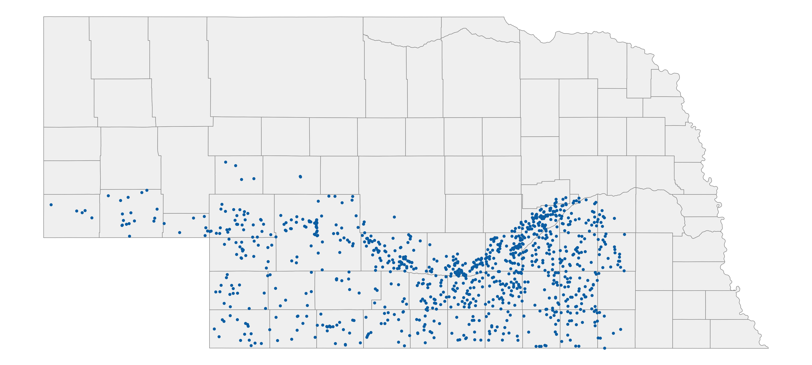

Spatial data is data about where things are: counties, wells, rivers, fields. An AI assistant can write the code that reads it, combines it and measures it. What it cannot do is:
Those are your job. So today is about:
sf, tidyverse and here packages. Install any you do not have yet; it is a one-time step per computer (see the packages slide in Chapter 1). sf is the package for vector data in R.here::here() (lecture 03-1).This lecture is about vector data. Lecture 09-2 is about raster data.
Nebraska’s 93 counties (polygons) and 1,000 irrigation wells (points), two vector layers drawn together. A layer is one spatial dataset: one file, one table in R.

| Your data is about | Kind | Examples |
|---|---|---|
| Separate things with a boundary or a location | Vector | counties, fields, farms, wells, roads, weather stations |
| A quantity that varies continuously over an area | Raster | rainfall, temperature, elevation, satellite images |
In R, a vector layer is a table (an sf table, after the package). It looks like any other table, with one extra column, geom or geometry, that holds each feature’s shape:
Simple feature collection with 93 features and 2 fields
Geometry type: MULTIPOLYGON
Dimension: XY
Bounding box: xmin: -104.0535 ymin: 40 xmax: -95.30829 ymax: 43.00171
Geodetic CRS: NAD83
First 10 features:
countyfp name geom
1 001 Adams MULTIPOLYGON (((-98.72441 4...
2 003 Antelope MULTIPOLYGON (((-98.3006 42...
3 005 Arthur MULTIPOLYGON (((-101.9856 4...
4 007 Banner MULTIPOLYGON (((-104.0529 4...
5 009 Blaine MULTIPOLYGON (((-100.2676 4...
6 011 Boone MULTIPOLYGON (((-98.29582 4...
7 013 Box Butte MULTIPOLYGON (((-103.4443 4...
8 015 Boyd MULTIPOLYGON (((-99.25758 4...
9 017 Brown MULTIPOLYGON (((-100.1985 4...
10 019 Buffalo MULTIPOLYGON (((-99.4268 40...One row is one county: its code, its name, and its shape. Filtering rows, adding columns, and joining other tables by countyfp, with the layer first (left_join(layer, table)), work as on any table, and the shape stays attached to its row. With the ordinary table first, the result is no longer a layer.
| Line | What it tells you |
|---|---|
Simple feature collection with 93 features and 2 fields |
93 rows (features) and 2 columns besides the shape |
Geometry type: MULTIPOLYGON |
The kind of shape in every row |
Bounding box: |
The smallest rectangle that holds every feature: lowest and highest x, lowest and highest y |
Geodetic CRS: NAD83 |
What the coordinates mean (next slide) |
These four lines hold three of the four checks this lecture asks you to print for every layer.
| Geometry type | What it is | Example |
|---|---|---|
POINT |
One location | a well |
LINESTRING |
A path through several points | a stretch of railroad |
POLYGON |
An area enclosed by a boundary | a field |
MULTI... |
Several pieces that belong to one feature | a county with an island, a river with branches |
The AI picks the right functions for each type. What you need is to know which type your data should be, so that a layer of farms that comes back as POINT (one location per farm) instead of POLYGON (each farm’s boundary) is caught.
A shape is stored as numbers: pairs of x and y. The numbers alone do not say where on Earth the place is. The coordinate reference system (CRS) does: it says what the numbers are measured in and from where. There are two kinds:
Each common CRS has a catalogue number, its EPSG code: 4269 is NAD83 longitude and latitude, used by most US government data; 4326 is WGS84 longitude and latitude, used by GPS; 26914 is NAD83 / UTM zone 14N, in metres.
The centre of Lancaster County, Nebraska:
| CRS | x | y |
|---|---|---|
| NAD83, EPSG 4269 (degrees) | -96.69 | 40.78 |
| NAD83 / UTM zone 14N, EPSG 26914 (metres) | 695,105 | 4,517,342 |
Same place, completely different numbers. Moving a layer from one CRS to another (transforming it) recomputes every coordinate.
Combining two layers, for example asking which county each well is in, compares their numbers directly. That only makes sense if both sets of numbers mean the same thing, so two layers must be in the same CRS before they can be combined.
sf checks this for you, as far as it can. If the two CRSs differ, it stops with an error:
Error in st_geos_binop("intersects", x, y, sparse = sparse, prepared = prepared, : st_crs(x) == st_crs(y) is not TRUEThat is the good case: you know something is wrong. The silent failures come when a layer’s CRS is wrong or missing, because then sf has nothing correct to check against. They are later in this deck.
Vector layers come in several file formats. Whatever the format, reading one follows the same pattern as reading a table in lecture 03-1:
| Part | What it is | Required? |
|---|---|---|
layer <- |
The name the layer will have inside R | Needed to keep the result |
reader_function |
st_read() or read_sf(), both from sf; they differ only in how they print |
Yes |
"path/to/file" |
Where the file is | Yes, the only required input |
A real line:
Reading layer `ne_counties' from data source
`/Users/taromieno/Teaching/Data-Science-with-R-AI/lectures/Chapter-9-Spatial-Data/ne_counties.gpkg'
using driver `GPKG'
Simple feature collection with 93 features and 2 fields
Geometry type: MULTIPOLYGON
Dimension: XY
Bounding box: xmin: -104.0535 ymin: 40 xmax: -95.30829 ymax: 43.00171
Geodetic CRS: NAD83st_read() prints a short report as it reads; the CRS is on its last line.
The same reader opens all of them:
| Extension | Format | What to know |
|---|---|---|
.shp |
Shapefile, the format of ArcGIS | One layer is several files with the same name: .shp (shapes), .shx (an index), .dbf (the columns), .prj (the CRS). Without the .prj, the layer has no CRS. |
.gpkg |
GeoPackage | One file, keeps the CRS |
.geojson |
GeoJSON | One file, always longitude and latitude in WGS84 |
.rds |
R’s own format | One file, the exact R object, only R opens it |
Saving a layer follows the writing pattern of lecture 03-1:
The extension picks the format. Two things to know:
write_csv() on a layer writes the shapes as long lines of text that nothing reads back as shapes. Save layers as .gpkg (or .rds if only R will read them).st_write() refuses to replace an existing file unless told to (delete_dsn = TRUE), unlike the writers in lecture 03-1.To check a save, read the file back and compare its CRS, number of features and column names with the original.
Data often arrives as an ordinary table with two coordinate columns, for example a csv of wells. To R it is just a table with two columns of numbers. One function turns it into a layer:
| Part | What it is | Required? |
|---|---|---|
table |
The ordinary table | Yes |
coords = c(...) |
The two coordinate columns, x first: longitude before latitude, or easting before northing (x and y in metres in a projected CRS) | Yes |
crs = code |
What the numbers mean, as an EPSG code | Not required by R, but required by you. Left out, the layer has no CRS at all, and nothing warns you. |
Only you can supply the CRS. It is not in the numbers; it is in the documentation that came with the data.
# A tibble: 3 × 3
wellid longdd latdd
<dbl> <dbl> <dbl>
1 13242 -98.3 40.5
2 26925 -98.4 40.3
3 30542 -99.4 40.4longdd and latdd are longitude and latitude in decimal degrees. The source of this data documents them as NAD83, EPSG 4269.
Simple feature collection with 1000 features and 1 field
Geometry type: POINT
Dimension: XY
Bounding box: xmin: -103.9628 ymin: 40.00194 xmax: -97.04458 ymax: 41.68503
Geodetic CRS: NAD83
# A tibble: 1,000 × 2
wellid geometry
* <dbl> <POINT [°]>
1 13242 (-98.29353 40.50624)
2 26925 (-98.42266 40.30104)
3 30542 (-99.43785 40.35229)
4 179865 (-98.06122 41.24994)
5 48712 (-98.71491 40.68367)
6 136454 (-100.5925 40.19352)
7 204797 (-98.87919 40.72425)
8 17229 (-97.78759 40.74192)
9 102966 (-98.27639 40.71546)
10 26555 (-99.7707 40.0563)
# ℹ 990 more rowsThe two coordinate columns became one geometry column, and the layer now has a CRS.
Almost every spatial function in sf starts with st_ and takes the layer first:
| Function | What it does | What to know |
|---|---|---|
st_crs(layer) |
Prints the CRS | The first check |
st_transform(layer, code) |
Moves the layer into another CRS, recomputing every coordinate | Use it to make two layers share a CRS |
st_set_crs(layer, code) |
Labels the layer with a CRS, changing no number | Only for a layer whose CRS is missing and known from its documentation. On a layer that has a CRS, it puts the layer in the wrong place. |
st_area(layer) |
Area of each polygon | Units come with the result, such as [m^2] |
st_length(layer) |
Length of each line | Same |
st_distance(a, b) |
Distance between every feature of a and every feature of b |
Same |
st_buffer(layer, dist) |
A zone of width dist around each feature |
dist is in metres for a longitude/latitude layer, and in the units of the CRS for a projected one. State the units in your request. |
st_centroid(layer) |
The centre point of each feature | |
st_drop_geometry(layer) |
Removes the shape, giving an ordinary table |
filter(), mutate(), select() and joins by a column work on a layer as on any table, and the shape stays with its row:
counties |>
filter(name %in% c("Lancaster", "Douglas")) |>
mutate(area_km2 = as.numeric(st_area(geom)) / 1e6)Simple feature collection with 2 features and 3 fields
Geometry type: MULTIPOLYGON
Dimension: XY
Bounding box: xmin: -96.91393 ymin: 40.52301 xmax: -95.87149 ymax: 41.39331
Geodetic CRS: NAD83
countyfp name geom area_km2
1 055 Douglas MULTIPOLYGON (((-96.47072 4... 878.490
2 109 Lancaster MULTIPOLYGON (((-96.91393 4... 2189.456Two variations you will see in AI-written code: sf::st_area(...), with the package name in front, and units::set_units(st_area(geom), km^2), which converts the units instead of dividing by a million. Both do the same thing as above.
layer |> st_transform(26914) |> st_buffer(2000): several steps passed along with |>st_transform(layer, st_crs(other_layer)): “use the other layer’s CRS”, the usual way to make two layers matchst_transform(layer, "EPSG:26914"): the code written as text; the same as 26914sf stops with an error (previous section). Annoying, but you know.Important
Every one of these silent failures is visible in the printed CRS, the bounding box, or a quick map. That is why those are the checks.
People say “lat/long”, so latitude often ends up first:
wells_swapped <- st_as_sf(wells_table, coords = c("latdd", "longdd"), crs = 4269)
st_bbox(wells_swapped) xmin ymin xmax ymax
40.00194 -103.96276 41.68503 -97.04458 The bounding box puts the wells at x between 40 and 42 and y between -104 and -97. Nebraska is at longitude -104 to -95 and latitude 40 to 43, so x and y are swapped. A latitude of -104 does not exist, yet the layer was created with no error and no warning, and any map or calculation that follows runs.
The same wells, with their coordinates in UTM zone 14N metres, read with the CRS a quick request would guess, longitude and latitude:
wells_utm_table <- wells |>
st_transform(26914) |>
mutate(easting = st_coordinates(geometry)[, 1],
northing = st_coordinates(geometry)[, 2]) |>
st_drop_geometry()
wells_mislabelled <- st_as_sf(wells_utm_table, coords = c("easting", "northing"), crs = 4269)
st_bbox(wells_mislabelled) xmin ymin xmax ymax
84452.06 4429383.06 664818.05 4618751.22 Asking how many wells lie in a Nebraska county:
Warning in st_is_longlat(x): bounding box has potentially an invalid value
range for longlat data[1] 0Zero of 1000, with no error. The only sign is a warning that the bounding box “has potentially an invalid value range for longlat data”, easy to miss among other output. The two layers carry the same CRS label, so sf combined them, but the numbers in one of them are metres. Only the bounding box (x in the hundreds of thousands cannot be a longitude) shows why.
A shapefile whose .prj file was lost has no CRS. Here the counties are saved as a shapefile, the .prj is deleted, and the rest is read back:
shp <- file.path(tempdir(), "counties.shp")
st_write(counties, shp, delete_dsn = TRUE, quiet = TRUE)
invisible(file.remove(sub("shp$", "prj", shp)))
counties_no_crs <- st_read(shp, quiet = TRUE)
st_crs(counties_no_crs)Coordinate Reference System: NAIts areas:
[1] 0.1553024 0.2423037 0.2007834[1] 21.61443Without a CRS, st_area() treats the numbers as plain x and y and returns square degrees, with no units and no warning. All of Nebraska comes to 21.6. With the CRS, it comes to 200,052 square kilometres. A square degree is not a fixed area either: it shrinks toward the poles.
The fix here is st_set_crs(), with the CRS from the data’s documentation, because the numbers are right and only the label is missing.
The same way of working as on the slide of this name in lecture 02-1: you ask, the AI writes into your .qmd (Quarto document) with one plain-English sentence above each chunk and renders it to HTML, and you judge the HTML.
For spatial data the HTML matters even more, because two of the four checks are a printed bounding box and a quick map, and you judge both by eye. The rendered document puts each map next to the code that made it and the numbers that describe it, and it stays with your project after the chat is gone.
Note
Every request that asks for code ends with the same few lines, the closing instructions; the full text is under Recommended requests near the end.
You cannot tell the AI what the coordinates mean without finding out first. For each file:
.shx, .dbf and .prj files are there too.The raw first lines of a csv with coordinates:
[1] "wellid,longdd,latdd" "13242,-98.293531,40.506244"
[3] "26925,-98.422662,40.301043"Numbers between -180 and 180 with several decimals look like longitude and latitude in degrees. Numbers in the hundreds of thousands or millions are metres or feet in a projected CRS. That narrows it down; it does not tell you which CRS. Only the documentation does.
The AI knows every st_ function. Your request supplies what it cannot know:
Using an agent in your editor or terminal?
An agent such as Claude Code can open the files itself. It still cannot read a CRS that is not in the file. Write down the CRS and where the place should be before it runs.
The AI has to guess the file names, which columns are coordinates, and what they mean. A typical reply:
Latitude first, a CRS guessed, and a shapefile read without checking it has a CRS. Every one of these runs.
An example for wells and counties:
In my R project, data/wells.csv has one row per irrigation well (1,000
wells). Columns longdd and latdd are longitude and latitude in NAD83,
EPSG 4269. data/counties.gpkg has the 93 counties of Nebraska, also in
EPSG 4269. Read both, making the wells a spatial layer.
Then check, for each layer: the CRS (I expect EPSG 4269), the number of
features (1,000 and 93), and the bounding box (I expect longitude
between -104 and -95 and latitude between 40 and 43). Draw a quick map
of each layer on its own.
Put the code in my Quarto document analysis/import.qmd, under the
heading "Read the spatial data", as R code chunks. Above each chunk,
write one plain-English sentence saying what it does and why. Build every
path with here::here(); no setwd(), no absolute paths. Print each check
on its own line as "name of check: expected X, got Y". Render the
document to HTML.In the rendered HTML, a sentence, then the chunk it describes.
Read the county layer, and make the wells table a spatial layer using its longitude and latitude columns in NAD83.
Print the CRS, the number of features and the bounding box of each layer, against what was expected.
for (nm in c("counties", "wells")) {
layer <- get(nm)
bb <- round(st_bbox(layer), 1)
cat(nm, "CRS: expected EPSG 4269, got EPSG", st_crs(layer)$epsg, "\n")
cat(nm, "features: expected", paste0(c(counties = 93, wells = 1000)[[nm]], ","), "got", nrow(layer), "\n")
cat(nm, "longitude: expected -104 to -95, got", bb["xmin"], "to", bb["xmax"], "\n")
cat(nm, "latitude: expected 40 to 43, got", bb["ymin"], "to", bb["ymax"], "\n")
}for (nm in ...) repeats the lines inside the braces once for each layer name, and get(nm) fetches the layer by its name. The output is in the next section.
The AI can write the checking code. It cannot know the right answers. Ask for these for every layer, after reading it and after every step that changes it:
| Ask the AI to print | Catches | What only you can supply | |
|---|---|---|---|
| 1 | the CRS | a missing CRS, a guessed one, two layers that do not match | the CRS from the documentation |
| 2 | the number of features | rows lost or duplicated, a file cut short | the count you expect |
| 3 | the bounding box | x and y swapped, numbers in metres labelled as degrees, a layer in the wrong place | where the place is |
| 4 | a quick map of each layer on its own | anything the numbers did not show: a missing piece, points in the sea, the wrong shapes | what the place looks like |
For a layer of shapes, also ask for the geometry type, and for any area or distance, ask for the units to be printed with the numbers.
One sentence at the end of your request does it:
For every layer, print the CRS, the number of features and the bounding
box, and draw a quick map of the layer on its own.Better, say what you expect, so the HTML says which checks passed:
I expect <layer> to be in EPSG <code>, with <number> features, and
longitude between <west> and <east> and latitude between <south> and
<north>. Print each check on its own line as "name of check: expected X,
got Y".The bounding box is in the units of the layer’s CRS. For a layer in metres, ask for the box after transforming to longitude and latitude, so you can compare it with a map.
What the checking code on the previous slide printed:
counties CRS: expected EPSG 4269, got EPSG 4269
counties features: expected 93, got 93
counties longitude: expected -104 to -95, got -104.1 to -95.3
counties latitude: expected 40 to 43, got 40 to 43
wells CRS: expected EPSG 4269, got EPSG 4269
wells features: expected 1000, got 1000
wells longitude: expected -104 to -95, got -104 to -97
wells latitude: expected 40 to 43, got 40 to 41.7 Every line matches. The wells cover only part of the state (their box is smaller than the counties’ box), which is what the quick map on the “Two kinds of spatial data” slide also shows: no wells in the northern part of the state. Whether that is right is a question about the data, for whoever produced it.
The four checks apply to any layer. Checks from what you know about this place are stronger, and no AI will think of them for you.
Using the layers counties and wells, print the total area of the
counties in square kilometres (I expect about 200,000), and the number
of wells that fall inside a county (I expect all 1,000).
Put the code in my Quarto document analysis/import.qmd, under the
heading "Check against the place", as R code chunks. Above each chunk,
write one plain-English sentence saying what it does and why. Build
every path with here::here(); no setwd(), no absolute paths. Print each
check on its own line as "name of check: expected X, got Y". Render the
document to HTML.The AI’s code, and what it printed:
total area: expected about 200,000 km2, got 200,052 wells inside a county: expected 1000, got 1000 Both pass. Run on wells_mislabelled from the “Silent failures” slide, the second check gives 0; run on counties_no_crs, the first gives 21.6. Neither failure can get past these two lines.
A student asked an AI to “draw a 5 km zone around each well and give me the area of one zone”, and got this:
A. What does each line do?
B. Which line will fail on your computer?
C. Which problem gives a wrong answer without an error?
D. Which check would catch it, and what is its expected value?
A. Changes the working directory; reads the csv and makes it a layer of points in NAD83 longitude and latitude; draws a zone of width 5 around each well; prints the area of the first zone.
B. Line 1. That folder exists only on jsmith’s computer.
C. Line 3. For a longitude/latitude layer, sf measures dist in metres, so dist = 5 draws a zone of 5 metres, not 5 kilometres. When run, line 4 prints 79 [m^2]. The request said “5 km”, the code says 5, and nothing warns that the units differ.
D. The area of one zone, with its units. A circle of radius 5 km has an area of about 78.5 square kilometres, so the expected value is known before anything runs; 79 square metres is a million times too small. The fix is dist = 5000, or units::set_units(5, km), and a request that states the units.
Copy one, then replace every <...> with what you found by looking at the files and their documentation. Every request for code ends with the closing instructions.
The lines that end every request for code. Replace the two blanks; leave “expected X, got Y” as it is, because it tells the AI how to print each check:
Put the code in my Quarto document <path to your .qmd>, under the
heading "<heading>", as R code chunks. Above each chunk, write one
plain-English sentence saying what it does and why. Build every path
with here::here(); no setwd(), no absolute paths. Print each check on
its own line as "name of check: expected X, got Y". Render the document
to HTML.A chat assistant cannot render: paste its chunks into your .qmd and render it yourself. An agent in your editor or terminal can do every step.
In my R project, <path to the file> is a <format> file with one row per
<what one row is>. Its documentation says the CRS is <CRS name, EPSG
code>. Read it into a layer called <layer name>. If the file has no
CRS, label it with that CRS without changing any coordinate.
Then check the CRS (I expect EPSG <code>), the number of features (I
expect <number>), the geometry type (I expect <type>), and the bounding
box (I expect longitude between <west> and <east> and latitude between
<south> and <north>). Draw a quick map of the layer on its own.
Put the code in my Quarto document <path to your .qmd>, under the
heading "<heading>", as R code chunks. Above each chunk, write one
plain-English sentence saying what it does and why. Build every path
with here::here(); no setwd(), no absolute paths. Print each check on
its own line as "name of check: expected X, got Y". Render the document
to HTML.In my R project, <path to the csv> has one row per <what one row is>
(<number> rows). The columns <x column> and <y column> hold <longitude
and latitude, or easting and northing> in <CRS name, EPSG code>,
according to <where you found this>. Make it a layer of points called
<layer name>, with <x column> as x.
Then check the CRS, the number of features, and the bounding box (I
expect longitude between <west> and <east> and latitude between <south>
and <north>; if the layer is not in degrees, transform a copy to EPSG
4269 to print this). Draw a quick map of the points on top of <a layer
of the area they should fall in>.
Put the code in my Quarto document <path to your .qmd>, under the
heading "<heading>", as R code chunks. Above each chunk, write one
plain-English sentence saying what it does and why. Build every path
with here::here(); no setwd(), no absolute paths. Print each check on
its own line as "name of check: expected X, got Y". Render the document
to HTML.Using the layer <layer name>, add a column <column name> with the
<area of each feature, or distance from each feature to the nearest
feature of another layer> in <units>. Print the CRS of every layer
used, and the units of the result.
Check: <a total or a value you know, such as the total area against the
known area of the state>.
Put the code in my Quarto document <path to your .qmd>, under the
heading "<heading>", as R code chunks. Above each chunk, write one
plain-English sentence saying what it does and why. Build every path
with here::here(); no setwd(), no absolute paths. Print each check on
its own line as "name of check: expected X, got Y". Render the document
to HTML.Explain this R code to me. For each line, write one plain-English
sentence. Then list:
1. any line that would only work on the computer it was written on
2. for each layer, what CRS it ends up in, and whether that CRS is
known or guessed
3. any line that could give a wrong result without an error, and which
check would reveal it
<paste the code here>| You need to understand | The AI can write |
|---|---|
| Vector or raster, and which geometry type your features are | The reader and the geometry functions |
| What one row of a layer is, and how many there should be | filter(), mutate(), joins on layers |
| What a CRS is, and which one each of your files is in, from its documentation | st_as_sf(..., crs = ), st_set_crs(), st_transform() |
| That layers must share a CRS before being combined | Transforming one to match the other |
| Where your place is, and how big it is | The checking code |
Every spatial layer: find its CRS in the documentation and write down how many features it has and where it should be. Ask the AI to write the code and the four checks into your .qmd: CRS, number of features, bounding box, quick map. Render it, and judge the HTML against what you wrote down.